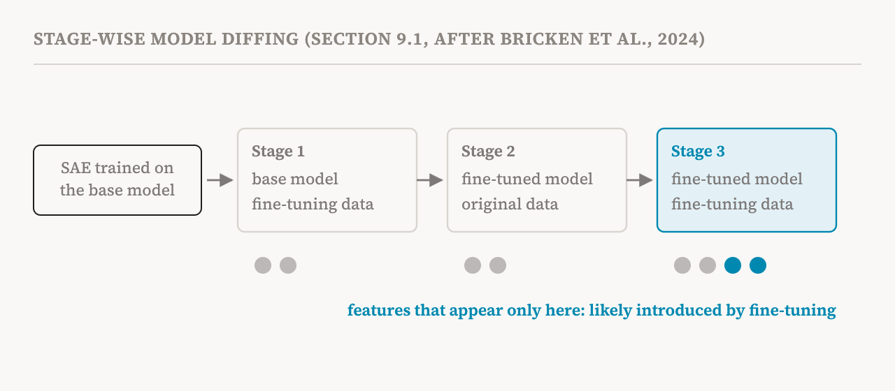
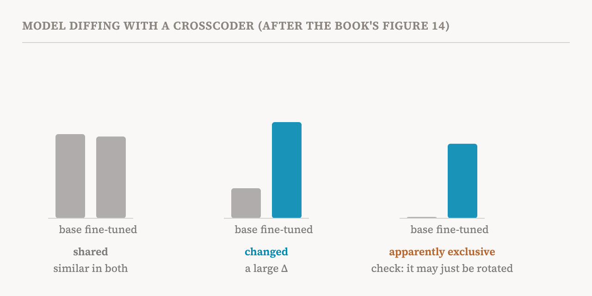

So far the series has studied one model at a time. This part covers section 9.1 of the book (pages 77–79), the first of three questions the book's ninth chapter asks about representations: what differs between two models? (The other two, where information is stored and how to steer it, come in part 25.)
Why compare models
The book's motivation is practical. Many concerning behaviours, such as reward hacking, where a model games the measure it is trained on, or sycophancy, where it tells users what they want to hear, arise during fine-tuning. So it matters to watch which features and circuits fine-tuning introduces or strengthens, to keep unsafe models from being deployed. Model diffing aims to surface some of them.
In the book's definition, model diffing looks for differences in features or circuits between two models. The differences may be features or circuits found in only one of them, or differences in how shared ones are used.
An older question, a different goal
Comparing networks is not new. An earlier line of work measured how similar two networks' internal representations are, using correlation, canonical correlation analysis and kernel-based scores such as CKA, the representational similarity metrics of part 9. That work was mostly about convergent learning: whether two models trained from different random starts learn the same representations up to a shuffle, rotation or other simple transformation. The book separates model diffing from it. Similarity measures give an overall score; model diffing looks for the concrete features or circuits that a particular training step introduced, strengthened or repurposed.
The book lists where model diffing has been applied: to the effects of fine-tuning and of distillation, to differences between architectures, to how concepts change during pretraining, and to finding vision-specific features added when a language model is trained on images too, so that they can be removed or steered.
Diffing with dictionaries
Dictionary learning, the SAEs and their relatives of parts 10 to 13, is the natural tool. When two models share an architecture, such as a base model and its instruction-tuned version, or checkpoints from one training run, a sparse autoencoder or transcoder can be trained on the difference between their activations for the same tokens, so its features describe what changed. A simpler baseline trains an SAE on the base model alone and uses it as a fixed set of features for measuring both. For a sequence of checkpoints, one method trains each checkpoint's SAE starting from the previous one's, so that features stay matched across the run. Differences are then measured on a shared set of prompts, and features that fire much more in the fine-tuned model can be tested by intervening on them. One 2026 study used this to find features responsible for misaligned behaviour.
Was it the model, or the data?
A subtle problem is telling whether a feature seen in the fine-tuned model was really introduced by fine-tuning, or simply appears because fine-tuning data look different from ordinary text. A 2024 study proposed stage-wise diffing to separate the two. Take an SAE trained on the base model and continue training it in three stages: first on the base model with the fine-tuning data, then on the fine-tuned model with the original data, and finally on the fine-tuned model with the fine-tuning data. Features that appear only in the last stage are the likely products of fine-tuning, because neither the new data on the old model nor the new model on the old data produced them.

Crosscoders across architectures
SAEs need the two models' activations to have the same size. When comparing different architectures, for example to track tendencies across model generations or sizes, that may not hold. Crosscoders, which part 13 introduced, solve this: they can have a separate encoder for each model, with different input sizes, projecting both into shared feature spaces. Their main advantage over SAEs is this comparison across architectures, though they have also been used on base and fine-tuned models and across pretraining checkpoints.

The companion notebook loads a pre-trained crosscoder for two models and sorts its features into shared and model-exclusive ones.
A related approach models how computations change rather than how representations differ. A 2026 study used transcoders to learn a correction that, added to the base model's MLP, reproduces what the fine-tuned MLP does within the full model. Instead of comparing activations, it learns an approximation of how fine-tuning changed the MLP's computation.
The false-positive problem
All dictionary-based diffing shares the concern of part 12: the sparse decomposition may not be faithful. Features found this way may not reflect the real representations or their causal roles. The book's example: finding an SAE feature for "confessing previous faults" in a fine-tuned model but not in the original does not show that the fine-tuned model uses it. Nor does its apparent absence from the original show that the original lacks a representation that could steer it towards such behaviour.
The book sets out the danger in a warning box. Dictionary methods can falsely report features as exclusive to one model. Part of the cause can be the training objective itself: a 2025 study showed that crosscoders trained with an L1 penalty can invent apparently novel features, and tried to reduce this with the Batch Top-k variant of part 11. Even then, false positives may remain. During fine-tuning, the direction representing a feature can rotate, and current dictionary methods cannot tell a feature that is new from one that is merely represented differently. So features that look exclusive to one model should be treated as hypotheses needing further checks.
Diffing without the weights
Finally, many important models are closed: their weights and activations are not available. A 2026 study showed that a language model can generate hypotheses, in plain language, about the behavioural differences between two models, by collecting both models' responses to the same prompts and extracting, clustering and summarising the differences. Compared with an SAE-based method, it matched it on many measures while surfacing more abstract, behaviour-level differences. This is not mechanistic, but it shows how much a strong behavioural baseline can do, a point part 34 returns to.
| Approach | What it compares, and when | Main caution |
|---|---|---|
| Similarity scores (CCA, CKA) | Overall likeness of representations; whether models converge | A score, not specific changes |
| SAE on activation differences, or a fixed base SAE | Features of two models with the same architecture | Sparse decompositions may not be faithful |
| Stage-wise SAE fine-tuning | What fine-tuning added, apart from what new data shows | Several rounds of training |
| Crosscoders | Shared and exclusive features, even across architectures | Can invent “exclusive” features; rotated features look new |
| Transcoder adapters | How fine-tuning changed an MLP's computation | One component at a time |
| LLM-based comparison | Behavioural differences in words, for closed models | Behavioural, not mechanistic |
| Term | Meaning |
|---|---|
| Model diffing | Finding differences in features or circuits between two models |
| Fine-tuning | Further training of a model on new data or objectives |
| Reward hacking | A model exploiting flaws in the measure it is trained to maximise |
| Convergent learning | Separately trained models learning the same representations |
| CKA | A widely used score of how similar two sets of representations are |
| Base and fine-tuned models | A model before and after fine-tuning |
| Stage-wise diffing | Continuing an SAE's training in stages to isolate what fine-tuning introduced |
| Model-exclusive feature | A feature that seems to exist in only one of two models |
| Feature rotation | A feature's direction changing between models, which can look like a new feature |
| Closed-weight model | A model whose weights are not publicly available |
Next, part 25 asks where in a model knowledge is stored, and how representations can be steered to change behaviour.